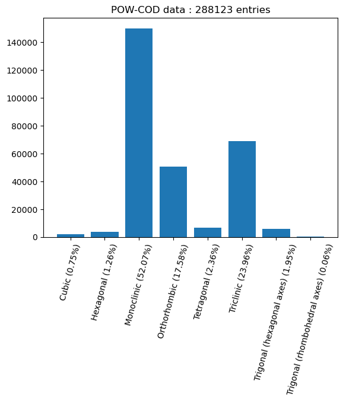

Show the code
import numpy as np
import torch
from torch import nn
import torch.nn.functional as F
from torch.utils.data import Dataset, DataLoader
import matplotlib.pyplot as pltMark Spillman
February 17, 2024
In my previous post, I replicated the results of an article by Chitturi and coworkers, who showed that convolutional neural networks can be used to determine unit cell edge lengths directly from PXRD data with a relatively good level of precision. I was able to both improve on their results and reduce the parameter count of the neural network by updating the architecture used.
In this post, we’ll look at an application of neural networks that I’ve not yet seen in the literature.
One thing that can severely hamper our ability to index a powder diffraction pattern is the presence of peaks coming from minority (i.e. impurity) phases in the sample. If the sample contains multiple crystalline phases then it can be extremely difficult or even impossible to index the data. Whilst many indexing algorithms have made progress towards dealing with impurities, it remains a challenge.
In this work, we will train a neural network to: 1. Determine if a PXRD dataset was produced by a single or multiple phases 2. Determine which peaks in the diffraction pattern come from the minority phase(s) in the sample
We will make use of the hybrid ConvNeXt-Transformer architecture we used in the last post.
base_name = "4-44-CuKa1-data_4000_"
root_dir = "./"
cs = np.load(root_dir+base_name+"crystal_systems_numeric.npy")
cs_key = {
"Cubic" : 0,
"Hexagonal" : 1,
"Monoclinic" : 2,
"Orthorhombic" : 3,
"Tetragonal" : 4,
"Triclinic" : 5,
"Trigonal (hexagonal axes)" : 6,
"Trigonal (rhombohedral axes)" : 7
}
crystal_systems = np.unique(cs, return_counts=True)
plt.bar(height=crystal_systems[1], x=[f"{x} ({100*float(crystal_systems[1][i])/cs.shape[0]:.2f}%)" for i, x in enumerate(list(cs_key.keys()))])
plt.xticks(rotation=75)
plt.title(f"POW-COD data : {len(cs)} entries")
plt.show()
cubic_data = np.where(cs == 0)[0]
hex_data = np.where(cs == 1)[0]
monoclinic_data = np.where(cs == 2)[0]
orthorhombic_data = np.where(cs == 3)[0]
tetrag_data = np.where(cs == 4)[0]
triclinic_data = np.where(cs == 5)[0]
# Ignore the trigonal!
trimonoortho = np.sort(np.hstack([monoclinic_data, orthorhombic_data, triclinic_data]))
class DiffractionData(Dataset):
def __init__(self,base_name, root_dir="./", idx=None, dtype=torch.float32):
if idx is not None:
self.crystal_system_numeric = torch.tensor(np.load(root_dir+base_name+"crystal_systems_numeric.npy")[idx], dtype=dtype)
self.hkl = torch.tensor(np.load(root_dir+base_name+"hkl.npy")[idx], dtype=dtype)
self.intensities = torch.tensor(np.load(root_dir+base_name+"intensities.npy")[idx], dtype=dtype)
self.unit_cell = torch.tensor(np.load(root_dir+base_name+"unit_cell.npy")[idx], dtype=dtype)
# Use extinctions rather than space groups
self.sg_number = torch.tensor(np.load(root_dir+base_name+"extinction_number.npy")[idx], dtype=dtype)
else:
self.crystal_system_numeric = torch.tensor(np.load(root_dir+base_name+"crystal_systems_numeric.npy"), dtype=dtype)
self.hkl = torch.tensor(np.load(root_dir+base_name+"hkl.npy"), dtype=dtype)
self.intensities = torch.tensor(np.load(root_dir+base_name+"intensities.npy"), dtype=dtype)
self.unit_cell = torch.tensor(np.load(root_dir+base_name+"unit_cell.npy"), dtype=dtype)
# Use extinctions rather than space groups
self.sg_number = torch.tensor(np.load(root_dir+base_name+"extinction_number.npy"), dtype=dtype)
def __len__(self):
return len(self.intensities)
def __getitem__(self, idx):
return self.crystal_system_numeric[idx], self.hkl[idx], self.intensities[idx], self.unit_cell[idx], self.sg_number[idx]
base_name = "4-44-CuKa1-data_4000_"
root_dir = "./"
device = torch.device("cuda:0" if torch.cuda.is_available else "cpu")
dtype = torch.float32Let’s define the data generation parameters
# Data generation parameters
from powcodgen import patterns
from tqdm.auto import tqdm
# Data generation parameters
# ------------------------------------------------------------
ttmin = 4 # Minimum data twotheta angle
ttmax = 44 # Maximum data twotheta angle
peakrange = 3. # Buffer for peaks to move beyond the data range
datadim = 2048 # Number of points in PXRD histograms
same_hwhm = False # Impurity data has same peak shape & hwhm as the dominant phase
min_impurity_intensity = 0.02 # Minimum intensity for impurity peaks
max_impurity_intensity = 0.15 # Maximum intensity for impurity peaks
add_background = True # Include an amorphous background (Chebyshev)
# ------------------------------------------------------------
# Create the tensors used as the PXRD histograms
full_data = torch.linspace(ttmin-(peakrange/2), ttmax+(peakrange/2),
int(np.ceil((ttmax-ttmin+peakrange)/((ttmax-ttmin)/datadim))),
device=device, dtype=dtype)
x = (full_data[full_data <= ttmin+(peakrange/2)]).clone() - ttminclass GRN(nn.Module):
""" Global Response Normalization, proposed in ConvNeXt v2 paper """
def __init__(self, dim, eps = 1e-6):
super().__init__()
self.eps = eps
self.gamma = nn.Parameter(torch.zeros(1, dim, 1))
self.beta = nn.Parameter(torch.zeros(1, dim, 1))
def forward(self, x):
# x = (B, C, T)
# Want to average first over length (T), then divide by average channel (i.e. average of C)
# Divide the L2 norms by the average for each channel
Gx = x.norm(p=2, dim=2, keepdim=True) # (B, C, T) --> (B, C, 1)
Nx = Gx / Gx.mean(dim=1, keepdim=True).clamp(min=self.eps) # (B, C, 1) / (B, 1, 1) --> (B, C, 1)
return self.gamma * (x * Nx) + self.beta + x
class DropPath(nn.Module):
""" DropPath regularisation can be used if needed, as described here:
https://arxiv.org/abs/1605.07648v4
"""
def __init__(self, p: float = 0.5, inplace: bool = False):
super().__init__()
self.p = p
self.inplace = inplace
def drop_path(self, x, keep_prob: float = 1.0, inplace: bool = False):
mask = x.new_empty(x.shape[0], 1, 1).bernoulli_(keep_prob)
mask.div_(keep_prob)
if inplace:
x.mul_(mask)
else:
x = x * mask
return x
def forward(self, x):
if self.training and self.p > 0:
x = self.drop_path(x, self.p, self.inplace)
return x
def __repr__(self):
return f"{self.__class__.__name__}(p={self.p})"
class ConvNeXtBlock(nn.Module):
# A 1D ConvNeXt v2 block
def __init__(self, dim, drop_path_prob=0.0):
super().__init__()
self.dwconv = nn.Conv1d(in_channels=dim, out_channels=dim, kernel_size=7, groups=dim, padding=3)
self.norm = nn.LayerNorm(dim)
self.pwconv_1 = nn.Conv1d(dim, 4*dim, kernel_size=1, padding=0)
self.act = nn.GELU()
self.GRN = GRN(4*dim)
self.pwconv_2 = nn.Conv1d(4*dim, dim, kernel_size=1, padding=0)
self.droppath = DropPath(p=drop_path_prob)
def forward(self, inputs):
# Inputs has shape (B, C, T)
x = self.dwconv(inputs)
x = self.norm(x.permute(0,2,1))
x = x.permute(0,2,1) # Layernorm expects channels last
x = self.pwconv_1(x)
x = self.act(x)
x = self.GRN(x)
x = self.pwconv_2(x)
return inputs + self.droppath(x)
class DownSample(nn.Module):
def __init__(self, in_dim, out_dim):
super().__init__()
self.norm = nn.LayerNorm(in_dim)
self.down = nn.Conv1d(in_dim, out_dim, kernel_size=7, stride=2, padding=3)
def forward(self, x):
x = self.norm(x.permute(0, 2, 1)).permute(0,2,1)
x = self.down(x)
return x
class ConvNeXt(nn.Module):
def __init__(self, out_dim=3, depths=[2, 2, 6, 2], dims=[40, 80, 160, 320], drop_path_prob=0.5, dropout=0.5):
super().__init__()
self.depths = depths
self.downsample_layers = nn.ModuleList() # stem and 3 intermediate downsampling conv layers
self.initial_conv = nn.Conv1d(1, dims[0], kernel_size=7, stride=2, padding=3)
self.initial_norm = nn.LayerNorm(dims[0])
self.layers = nn.ModuleList()
for i, dd in enumerate(zip(depths, dims)):
depth, dim = dd
for d in range(depth):
self.layers.append(ConvNeXtBlock(dim, drop_path_prob=drop_path_prob))
if i+1 != len(dims):
self.layers.append(DownSample(in_dim=dim, out_dim=dims[i+1]))
else:
self.layers.append(DownSample(in_dim=dim, out_dim=dims[i]))
self.final_norm = nn.LayerNorm(1024)
self.flatten = nn.Flatten()
self.output = nn.Sequential(
nn.Linear(1024, 64),
nn.GELU(),
nn.Dropout(dropout),
nn.Linear(64, out_dim)
)
def forward(self, x, shapes=False):
x = self.initial_conv(x)
x = self.initial_norm(x.permute(0,2,1)).permute(0,2,1)
if shapes:
print(x.shape)
for l in self.layers:
x = l(x)
if shapes:
print(x.shape)
x = self.final_norm(F.gelu(self.flatten(x)))#.permute(0,2,1)).permute(0,2,1) # global average pooling, (B, C, T) -> (B, C)
#x = self.flatten(x)
if shapes:
print(x.shape)
x = self.output(x)
return x
model = ConvNeXt(depths=[2,2,6,2], dims=[4,8,12,16]).to(device)
_ = model(torch.randn(100,1,2048).to(device), shapes=False)
print("Model parameters:",sum(p.numel() for p in model.parameters() if p.requires_grad))Model parameters: 87279class GLU(nn.Module):
def __init__(self, in_dim, out_dim, act=F.gelu, bias=True):
super().__init__()
self.linear1 = nn.Linear(in_dim, out_dim, bias=bias)
self.linear2 = nn.Linear(in_dim, out_dim, bias=bias)
self.act = act
def forward(self, x):
return self.act(self.linear1(x))*self.linear2(x)
class TransformerBlock(nn.Module):
def __init__(self, dim, heads, dropout=0.1):
super().__init__()
self.heads = heads
self.qk = nn.Linear(dim, 2*dim)
self.v = nn.Linear(dim, dim)
self.mhsa_out = nn.Linear(dim, dim, bias=False)
self.GLU = GLU(dim, (dim*3)//2, bias=False)
self.linear_out = nn.Linear((dim*3)//2, dim, bias=False)
self.ln1 = nn.LayerNorm(dim)
self.ln2 = nn.LayerNorm(dim)
self.pos = nn.Embedding(256, embedding_dim=dim)
self.dropout = nn.Dropout(dropout)
def mhsa(self, x):
B, T, C = x.shape
q, k = self.qk(x + self.pos(torch.arange(x.shape[1], device=x.device))).chunk(2, dim=-1)
v = self.v(x)
q = q.reshape(B, self.heads, T, C//self.heads)
k = k.reshape(B, self.heads, T, C//self.heads)
v = v.reshape(B, self.heads, T, C//self.heads)
x = F.scaled_dot_product_attention(q, k, v)
x = x.reshape(B, T, C)
x = self.mhsa_out(x)
return x
def ffwd(self, x):
x = self.GLU(x)
x = self.linear_out(self.dropout(x))
return x
def forward(self, x):
x = x + self.mhsa(self.ln1(x))
x = x + self.ffwd(self.ln2(x))
return x
class ConvNeXtTransformer(nn.Module):
def __init__(self, datadim=2048, depths=[2, 2, 6, 2], dims=[40, 80, 160, 320],
transformer_layers=6, transformer_heads=2, drop_path_prob=0.1, dropout=0.1):
super().__init__()
self.depths = depths
self.datadim = datadim
self.downsample_layers = nn.ModuleList() # stem and 3 intermediate downsampling conv layers
self.initial_conv = nn.Conv1d(1, dims[0], kernel_size=7, stride=2, padding=3)
self.initial_norm = nn.LayerNorm(dims[0])
self.conv_layers = nn.ModuleList()
self.transformer_layers = nn.ModuleList()
self.cls_token = nn.Embedding(1, dims[-1])
for i, dd in enumerate(zip(depths, dims)):
depth, dim = dd
for d in range(depth):
self.conv_layers.append(ConvNeXtBlock(dim, drop_path_prob=drop_path_prob))
if i+1 != len(dims):
self.conv_layers.append(DownSample(in_dim=dim, out_dim=dims[i+1]))
for i in range(transformer_layers):
self.transformer_layers.append(TransformerBlock(dims[-1], transformer_heads, dropout=dropout))
self.final_norm = nn.LayerNorm(dims[-1])
self.output_pure_impure = nn.Sequential(
GLU(dims[-1], 32),
nn.Linear(32, 1)
)
self.patch_classifier = nn.Conv1d(dims[-1], 16, kernel_size=1)
def forward(self, x, shapes=False):
x = self.initial_conv(x)
x = self.initial_norm(x.permute(0,2,1)).permute(0,2,1)
if shapes:
print(x.shape)
for l in self.conv_layers:
x = l(x)
if shapes:
print(x.shape)
x = F.gelu(x)
# Now concatenate the CLS token with the output of the convolutional layers
cls = self.cls_token(torch.arange(1, device=x.device)).squeeze().expand(x.shape[0], -1).unsqueeze(-1)
x = torch.cat([cls, x], dim=-1)
x = x.permute(0, 2, 1)
for l in self.transformer_layers:
x = l(x)
if shapes:
print(x.shape)
x = self.final_norm(x).permute(0,2,1)
if shapes:
print(x.shape)
x_pure_impure = self.output_pure_impure(x[:,:,0])
patch_pure_impure = self.patch_classifier(x[:,:,1:])
B, T, C = patch_pure_impure.shape
patch_pure_impure = patch_pure_impure.permute(0,2,1).reshape(B, T*C)
if shapes:
print(x_pure_impure.shape, patch_pure_impure.shape)
return x_pure_impure, patch_pure_impure
model = ConvNeXtTransformer(depths=[2,2,6,2], dims=[4,8,12,16], transformer_layers=6, transformer_heads=2).to(device)
_ = model(torch.randn(100,1,2048).to(device), shapes=False)
print("Model parameters:",sum(p.numel() for p in model.parameters() if p.requires_grad))Model parameters: 57341C:\Users\Mark\AppData\Local\Temp\ipykernel_10408\3200872698.py:33: UserWarning: 1Torch was not compiled with flash attention. (Triggered internally at C:\cb\pytorch_1000000000000\work\aten\src\ATen\native\transformers\cuda\sdp_utils.cpp:263.)
x = F.scaled_dot_product_attention(q, k, v)def get_stats(outputs, ground_truth):
with torch.no_grad():
pred = (torch.sigmoid(outputs) > 0.5).type(torch.int)
TP = ((ground_truth == 1) & (pred == 1)).sum()
FP = ((ground_truth == 0) & (pred == 1)).sum()
TN = ((ground_truth == 0) & (pred == 0)).sum()
FN = ((ground_truth == 1) & (pred == 0)).sum()
precision = torch.nan_to_num(TP/(TP+FP))
recall = torch.nan_to_num(TP/(TP+FN))
f1 = torch.nan_to_num(2.*(precision*recall)/(precision+recall))
accuracy = torch.nan_to_num((TP+TN)/(TP+TN+FP+FN))
mcc = torch.nan_to_num(((TP*TN) - (FP*FN)) / torch.sqrt((TP+FP)*(TP+FN)*(TN+FP)*(TN+FN)))
return precision, recall, f1, accuracy, mcc
# Training / validation code
def get_loss(dataloader, model, optimizer, epoch, train=True, show_pbar=True, impure_peak_threshold=2.5e-2, plot=True):
"""
Get the losses for an epoch. Toggle between the dataloaders so the same code can be recycled
for the training and validation sets.
"""
if show_pbar:
pbar = tqdm(dataloader)
else:
pbar = dataloader
logs = []
if not train:
model.eval()
for batch_cs, batch_hkl, batch_i, batch_cell, batch_sg_number in pbar:
# zero the parameter gradients
optimizer.zero_grad(set_to_none=True)
# forward + backward + optimize
if len(batch_cs) % 2 != 0 or len(batch_cs) % 3 != 0:
maxlength = 6*(batch_cs.shape[0]//6)
batch_cs = batch_cs[:maxlength]
batch_hkl = batch_hkl[:maxlength]
batch_i = batch_i[:maxlength]
batch_cell = batch_cell[:maxlength]
batch_sg_number = batch_sg_number[:maxlength]
calcdata = patterns.calculate_diffraction_patterns_with_impurities(
x,
full_data,
batch_cs.to(device),
batch_hkl.to(device),
batch_i.to(device),
batch_cell.to(device),
batch_sg_number.to(device),
same_hwhm=same_hwhm,
min_impurity_intensity=min_impurity_intensity,
max_impurity_intensity=max_impurity_intensity,
add_background = add_background,
)
combined, pure_patterns, impure_patterns, pure_impure, cs, cell, sgs, hkls = calcdata
pred_pure, pred_peaks = model(combined.unsqueeze(1))
impurepeaks = ((impure_patterns - pure_patterns) > impure_peak_threshold).type(dtype)
pure_impure_bce = F.binary_cross_entropy_with_logits(pred_pure.squeeze(), pure_impure)
pred_peaks_bce = F.binary_cross_entropy_with_logits(pred_peaks.squeeze(), impurepeaks)
# precision, recall, f1, accuracy, mcc
p_i_stats = get_stats(pred_pure.squeeze(), pure_impure)
patch_stats = get_stats(pred_peaks.squeeze(), impurepeaks)
if train:
loss = pure_impure_bce + pred_peaks_bce
loss.backward()
nn.utils.clip_grad_norm_(model.parameters(), 1.0)
optimizer.step()
if show_pbar:
pbar.set_description_str(f"Epoch: {epoch+1} Loss: {loss.item():.3f} P/I Prec {p_i_stats[0].item():.3f} P/I Rec {p_i_stats[1].item():.3f} Patch Prec {patch_stats[0].item():.3f} Patch Rec {patch_stats[1].item():.3f}")
logs.append(torch.tensor([p_i_stats + patch_stats]))
if not train:
if plot:
for i in range(5):
plt.plot(combined[i].cpu())
plt.plot(-1*impure_patterns[i].cpu()-0.05)
plt.plot(impurepeaks[i].cpu())
plt.plot(F.sigmoid(pred_peaks[i]).detach().cpu())
plt.title(f"{100*F.sigmoid(pred_pure[i]).detach().item():.2f}")
plt.show()
model.train()
return logs
batchsize = (128*3)//2
learning_rate = 3e-4
num_epochs = 50
impure_peak_threshold = 2.5e-3
idx = None # Train on all data, not a subset
show_pbar = True
model = ConvNeXtTransformer(depths=[2,2,6,2],
dims=[4,8,12,16],
transformer_layers=6,
transformer_heads=2,
drop_path_prob=0,
dropout=0,
).to(device)
print("Model parameters:",sum(p.numel() for p in model.parameters() if p.requires_grad))
optimizer = torch.optim.AdamW(params=model.parameters(), lr=learning_rate, betas=(0.9, 0.99), weight_decay=0.01)
dataset = DiffractionData(base_name, root_dir=root_dir, idx=idx)
g = torch.Generator().manual_seed(42)
train_set, val_set = torch.utils.data.random_split(dataset, [0.8, 0.2], g)
train_dataloader = DataLoader(train_set, batch_size=batchsize, shuffle=True)
val_dataloader = DataLoader(val_set, batch_size=batchsize, shuffle=True)
print(f"Training samples = {len(train_set)}\nValidation samples = {len(val_set)}")Model parameters: 57341
Training samples = 230499
Validation samples = 57624num_steps = (len(train_set)//batchsize) * num_epochs
print(f"Epochs: {num_epochs} Total gradient updates: {num_steps}")
all_train_losses = []
all_val_losses = []
best_val_mape = float("inf")
for epoch in range(num_epochs):
train_losses = get_loss(train_dataloader, model, optimizer, epoch, train=True, show_pbar=show_pbar, impure_peak_threshold=impure_peak_threshold)
all_train_losses.append(train_losses)
train_losses = torch.cat(train_losses, dim=0).mean(dim=0)
val_losses = get_loss(val_dataloader, model, optimizer, epoch, train=False, show_pbar=show_pbar, impure_peak_threshold=impure_peak_threshold)
all_val_losses.append(val_losses)
val_losses = torch.cat(val_losses, dim=0).mean(dim=0)
if show_pbar:
#print(f"Train: MSE {train_losses[0]:.3f} MAE {train_losses[1]:.3f} MAPE {train_losses[2]:.3f} Huber {train_losses[3]:.3f}")
#print(f" Val: MSE {val_losses[0]:.3f} MAE {val_losses[1]:.3f} MAPE {val_losses[2]:.3f} Huber {val_losses[3]:.3f}")
pass
#if val_losses[2] < best_val_mape:
# #best_val_mape = val_losses[2]
# #torch.save({
# # 'epoch': epoch,
# # 'model_state_dict': model.state_dict(),
# # 'optimizer_state_dict': optimizer.state_dict(),
# # }, f"saved_models/{name}.pth")
# passEpochs: 50 Total gradient updates: 60000